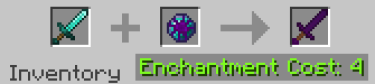

Enderite Tools
Please read Enderite on information on how to obtain Enderite before continuing.
Crafting
To craft Enderite Tools, you place the Diamond equivalent of the armor you want in the first slot of an anvil, and an Enderite Gem in the second slot. The crafting recipe bellow shows this in action. It costs 4 experience points to perform this action.
Information
One thing to note is that the way the mining based tools (ie pickaxe, axe, or shovel) work is that it secretly gives you the Haste I effect while holding it. This means that if you are using a Haste II beacon or potion, it will override this and give you the Haste II instead.